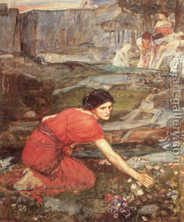

Bava Kamma 8 - One Lifts a Found Object, Intending to Acquire it for his Fellow
If one lifts up an object that he found, intending to acquire it entirely for his fellow, then his fellow acquires it. This is true even though he thereby deprives other potential finders of the object. It can be proved from the case of two people who have found a garment .
There each one is holding his end of the garment, and should his fellow drop it, the garment would partially rest on the floor, which would mean that our claimant has not acquired it either, since complete lifting is required. We must conclude that when they lift the garment, both intend to help the other one acquire it.
Test your knowledge of the daf